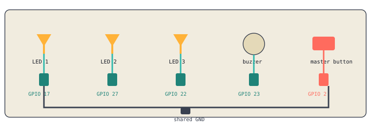

You already have 2 LEDs wired from yesterday. Today: alternate them, wrap the pattern in a function, add a 3rd LED, add a buzzer, add a master on/off button, then control all of it from a GUI.

Simplified schematic. Every component shares the same GND rail.
No new wiring here. Just new code.
from gpiozero import LED
from time import sleep
led1 = LED(17)
led2 = LED(27)
for i in range(10):
led1.on()
led2.off()
sleep(0.5)
led1.off()
led2.on()
sleep(0.5)
You just wrote the same 4 lines twice inside that loop. A function lets you name that block and call it instead of repeating it.
def swap_leds():
led1.on()
led2.off()
sleep(0.5)
led1.off()
led2.on()
sleep(0.5)
for i in range(10):
swap_leds()
Wire a third, separate LED and resistor to GPIO 22, ground the same way as the others.
import tkinter as tk
from gpiozero import PWMLED
led1 = PWMLED(17)
led2 = PWMLED(27)
led3 = PWMLED(22)
window = tk.Tk()
window.title("LED Control Panel")
def make_slider(led, label):
tk.Label(window, text=label).pack()
def set_val(val):
led.value = int(val) / 100
s = tk.Scale(window, from_=0, to=100, orient='horizontal', command=set_val)
s.pack()
make_slider(led1, "LED 1")
make_slider(led2, "LED 2")
make_slider(led3, "LED 3")
window.mainloop()
make_slider function builds all three sliders instead of copy-pasting the same block three times.Wire a buzzer to GPIO 23 and GND.
from gpiozero import PWMOutputDevice
buzzer = PWMOutputDevice(23)
def set_volume(val):
buzzer.value = int(val) / 100
tk.Label(window, text="Buzzer Volume").pack()
vol_slider = tk.Scale(window, from_=0, to=100, orient='horizontal', command=set_volume)
vol_slider.pack()
Wire a button to GPIO 2 and GND. This one button controls everything at once, it's not one more slider.
from gpiozero import Button
system_on = True
button = Button(2)
def toggle_system():
global system_on
system_on = not system_on
if not system_on:
led1.off()
led2.off()
led3.off()
buzzer.off()
button.when_pressed = toggle_system
Two LEDs alternate using a function, not copy-pasted code
Three sliders independently control three separate LEDs
A fourth slider controls the buzzer
The master button turns everything off at once
Worksheet and Engineering Notebook filled in